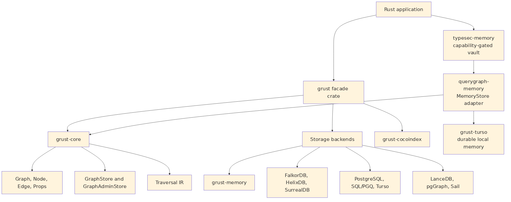

Grust is not trying to be every graph library for Rust. It is not an
algorithm crate like petgraph, and it is not a thin wrapper
around a single database. It is a property graph layer: a compact model
of labeled nodes, labeled edges, and typed properties that can be
carried across storage engines.
The current workspace is arranged around one core crate, one public facade, and backend or integration crates:

The grust-core crate owns the durable concepts. It
defines identifiers, labels, property values, graph builders, schemas,
traversals, error types, load reports, and backend traits. The
grust crate re-exports those pieces and gates backend
crates behind Cargo features.
Core also owns the small lowering helpers that have to mean the same
thing everywhere. relationship_type normalizes edge labels
for backends that need database-safe relationship names.
schema_identifier normalizes schema labels and fields for
SQL-like typed surfaces. edge_key gives table and export
backends the same structural fallback key for an edge when the caller
has not provided an explicit EdgeId.
That split is important. Core model code stays light, deterministic, and mostly dependency-free. Backends are allowed to depend on Redis, SurrealDB, LanceDB, PostgreSQL, Spark Connect, HTTP clients, gRPC clients, or SDKs without dragging those dependencies into every Grust user.